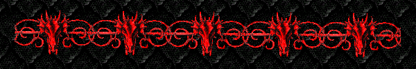
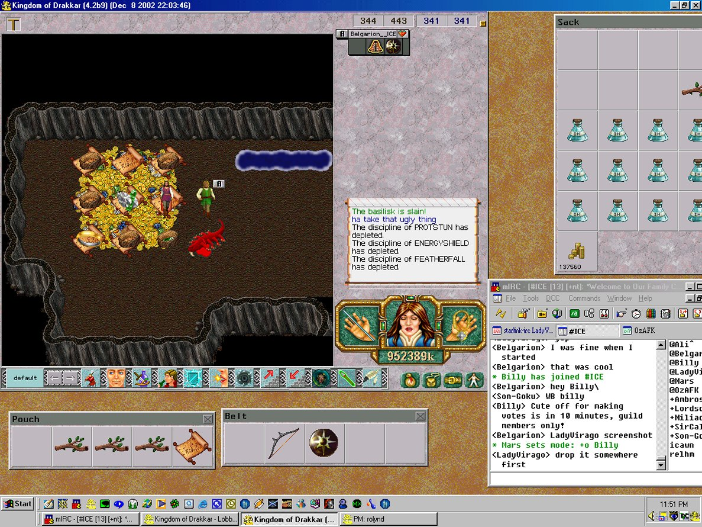

LadyVirago_ICE's
Drakkar
Page
Hail to you, brave warrior.
Rest your weary battle-torn body,
and regenerate your strength,
as you peruse my page.
I, LadyVirago, belong to the brotherhood of the Mentalist,
but all are welcome here be you martial artist, thief, barbarian, fighter, paladin, or healer.

My main crit that most of you will or have met in the Worlds
of Nork and Cob is LadyVirago__ICE.
LadyVirago is the Guild Leader of the ICE Guild.
ICE is a family of like minded people,
featuring crits of all classes and sizes and they are all wonderful, friendly
people.
LadyVirago is currently a 19/19 ment with three little sisters:...a 11/10 thief -Pandora__ICE , a 17/12 barb
-Tarna__ICE
and a 1/8 healer - Karena__ICE
My personal motto after a day when killed and stripped by 2 dragons:
Don't meddle in the affairs of dragons, cuz, like, you're crunchy and taste good
with ketchup. (hehe)
I've decided to change the general layout/purpose of this page
becausel...it's more fun that way!
I'm now dedicating this page to
screenshots I have taken or received.. hunts I have been on or anything weird
really..
priority given of course to anything ments have done/have had happen to them:)
First one up for your viewing
pleasure.. what i call.. "what happens when ments get bored"...(and a baby crit
wants a shield)

OK so not the biggest
accomplishment in Drak..but still ..we ments at this size don't get to kill many
lairs well without sticks:)
Thanks Bel for inviting me
along! Was a fun hunt..didn't take long and no deaths but the baskie himself.
Congrats to Belgarion_ICE who has now solo'd him:)
Links
(Billy has links to many other great Drakkar pages on his page and as such I
won't duplicate them here)
Please drop by the home of the mighty
ICE Guild
Sign Guestbook
View Guestbook
You are visitor #

Page updated March 2002.
All graphics copyright and property of DrakkarZone Inc., with exception to the
dragon lines and chalices used,
they are thanks to :